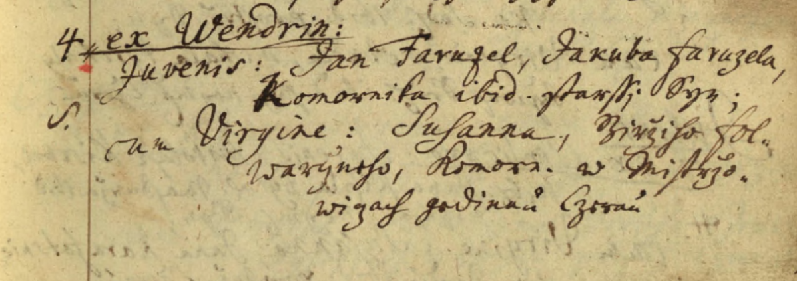
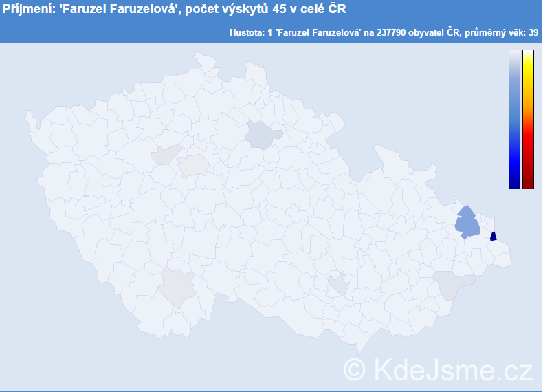
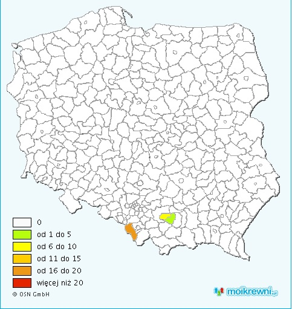

Výzkum Faruzelů mi přišel vždy speciální. Zaprvé je to hodně netypické příjmení. Zadruhé bydlí třetina Faruzelů na jedné ulici. Když jsem se na internetu dočetla, kolik Faruzelů žije v Česku a v Polsku, moje první myšlenka byla, že přece musíme být všichni příbuzní. A tak jsem začala pátrat. Mým cílem bylo propojit všechny záznamy jména Faruzel, které jsem mohla najít. V roce 2020 se mi to přece jen povedlo. Našla jsem prvního Faruzela, který se přistěhoval do Mostů a k němuž můžu propojit 95 % dalších Faruzelů. A věřím, že i těch pár, které zařadit nemůžu, budou z rodiny.
První Faruzel, kterého se mi podařilo dohledat, se narodil ve Smilovicích a v roce 1733 se přiženil do Mistřovic. Jeho potomci se v druhé polovině 19. století rozšířili do Koňakova, Mostů, Těšína a ve 20. století i do jiných měst po republice.
První matriky narození ve Smilovicích vznikly (nebo se minimálně dochovaly) v roce 1725. Z té doby (1723 – 1726) pochází také Karolínský katastr, kde žádný Faruzel psán není. Před-pokládám, že v té době již rodina Faruzelů bydlela ve Vendryni, ale ani v Kar. katastru tam je nedohledáme.
Příjemní Faruzel má v matrikách několik obměn. První Faruzel v Mistřovicích Jan, byl při svatbě (1733) zapsán v matričních knihách Mistřovic jako Faruzeck a při narození prvních čtyř dětí byl psán jako Faruzek. Naopak v kostelních knihách je při svatbě zapsán jako Faruzel.

Je tedy možné, že se příjmení Jana zkomolilo, bylo ze začátku zapisováno špatně nebo podoba příjmení ještě nebyla ustálená - mnoho jiných příjmení se v první polovině 18. století teprve tvoří. Stálé příjmení je oficiálně zavedeno až v roce 1770.
Později také můžeme najít podobu jména Farusel, s „s“ místo zet.
Původ příjmení Faruzel nejspíše vychází ze slova fara, jak také píše Izabela Łuc ve svém „Słowniku nazwisk mieskańców południowego Śląska XIX wieku“. Význam příjmení Fa-ruzel přirovnává k příjmení Farana, o kterém píše, že vzniklo buď odvozením ze slova fara (ve smyslu presbytáře či farního úřadu) nebo od německého osobního jména Farren, které ale také vychází ze stejného základu. Co měli společného Faruzelovi s farou, se můžeme jen dohadovat. Je možné, že buď bydleli na faře nebo první Faruzel byl dokonce evangelický farář.
Příjmení Faruzel se vyskytuje také v pojmenování několika míst. Ve Slovníku pomístních jmen na Moravě a ve Slezsku najdeme pod heslem „Faruzel“ názvy Faruzeluv dul, Faruzelova cesta a Faruzeluv mostek, což byly objekty v Mostech pojmenovány podle nějakého vztahu (vlastnictví, okolnost, událost) k Faruzelům.
Nejstarším doloženým Faruzelem byl Jakub Faruzel, který byl komorníkem a okolo roku 1709 se mu ve Vendryni narodil syn Jan Faruzel. O Jakubovi se dozvídáme pouze ze zápisu svatby jeho syna.
V roce 2017 žilo v České republice 25 osob s příjmením Faruzel a 20 žen s přechýlenou formou Faruzelová. 11 ze 45 osob žilo v Českém Těšíně, 20 jich bydlí v Ostravě.
V Polsku žilo 27 osob s tímto příjmením, z toho 18 v Cieszyně. Dále bydlelo šest Faruzelů v Krakově a tři ve Wieliczce. Několik Faruzelů se přestěhovalo i např. do USA.
U Faruzelů se mluvilo vždycky „po naszymu“ až po generaci Pawla Faruzela (nar. 1910). Děti od Pavla Faruzela (Roman, Vladislav i Pavla) se svými dětmi už mluvili česky.
Ohledně národnosti se budu pouštět trochu do spekulací. Předpokládám, že za Rakousko-Uherska se většina rodin na Těšínsku považovala za „slezáky“, mluvili nářečím a nemyslím si, že národnostní otázka by pro ně byla něčím důležitým.
Změnit se to mohlo okolo první světové války, kdy také probíhala Sedmidenní válka o Tě-šínsko. Nedokážu říci, na jakou stranu se přikláněla naše rodina – zda se cítili více Poláky či Čechy. Jakousi indicií nám může být to, že rodina patřila pod Augšburskou evangelickou církev, která si za první republiky zachovala vážně polský charakter. Můžeme tedy předpo-kládat, že se cítili více jako Poláci, ale předpokládám, že oficiální zapsanou národnost měli českou.
Faruzelovi byli dle matrik vždy protestantského vyznání, chodili do Ježíšova kostela v Těšíně a později do Kostela apoštolů Petra a Pavla Na Nivách.